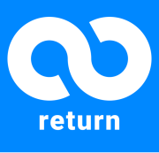

Vision
끊임없이 발전하고
개선하는
지속적인 개발
team return은 지속가능한 개발을 위해 많은
노력을 기울이고 있어요.

team return의 비전이에요.

VISION 1. 아키텍쳐링
아키텍처는 각 관계들을 느슨하게 만들어주고, 지속가능한 개발을
더욱 쉽게 할 수 있어요.
따라서, 분야별로 맞는 아키텍처를 적용하고 있어요.

VISION 2. 문서화
문서화를 통해 전체적인 구조를 파악하고, 서비스의 진행상황 및
앞으로의 방향성을 결정
하는 데에 중요한 구실을 해요. 그래서
문서화에 많은 신경을 쓰고 있어요.
VISION 3. 애자일 스크럼
애자일은 소프트웨어를 끊임없이 발전시키고 개선하는데 효과적인
개발 방법론이에요.
애자일 프레임워크인 스크럼을 이용해
애자일을 실행하고, 발전시키고 있어요.